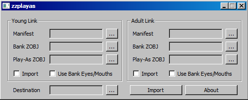
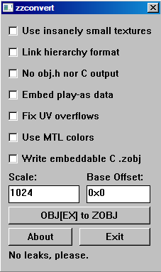
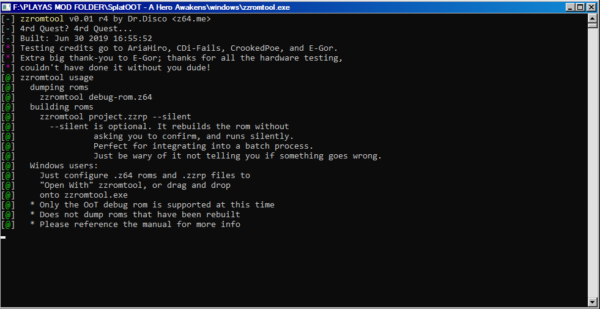
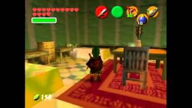

Legacy Tools
For current tools, click here

ZZPlayas
Legacy play-as Tool for the N64 Zelda titles.
Writes you custom link file to rom/zzrt/zzrtl project

ZZConvert
Legecy conversion tool for the N64 Zelda titles.
Converts objex files into f3dex2 zobj files
Fits on your favorite floppy disk!

ZZRomtool
zzromtool is a filesystem management utility for the debug version of Ocarina of Time.
Extract the assets of your rom, change parts, and rebuild!
Special thanks to AriaHiro, Seedy-eye, E-Gor, Ideka, and Spaghetti for assisting with the tool!

ZZMapPorter
Map porting tool for OOT Debug.
Corrects and writes MM maps for OOT Debug